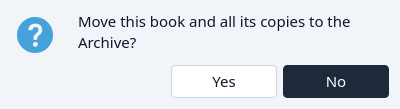
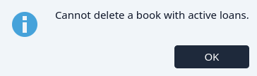
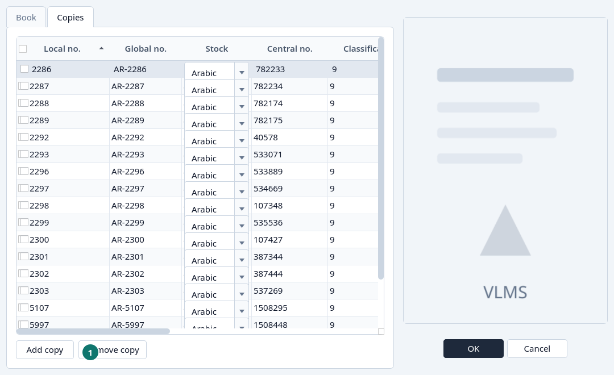
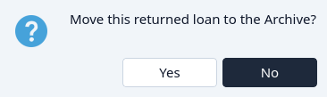
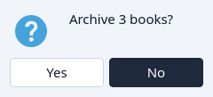

Remove
Archive a title, a copy, a member, or a loan, then remove it for good.
A book
Highlight the title. Leave the ticks clear if you mean this title alone. Click Delete.


No leaves the title on the Catalogue. Yes archives the title and its copies. Their local numbers stay with them, so they can be reused. See Reuse a local number.
If a copy is still out, Delete is refused. Return that loan first.


A copy
Edit the title, open the Copies tab, highlight the line, and click Remove copy. A copy that is still out cannot be removed. OK saves the book without that copy. The copy is archived, not destroyed.


- Remove copy
A member
Delete on Members archives the member, unless a loan of theirs is still out. Then the message offers Go to Loans.

A loan
Only a returned loan can be archived from Circulation. Highlight it and click Delete.


An open or overdue loan has to be returned first. See Return or extend.
Several at once
Tick the rows, including with the header tick. Delete then names how many, and acts on each ticked row. A row that cannot be archived is skipped. See Ticks.



Permanently
When the archived record should not come back, open the Archive and follow the order. A loan can go at any time. A copy waits until no loan names it. A book waits until it has no copies. A member waits until no loan names them.